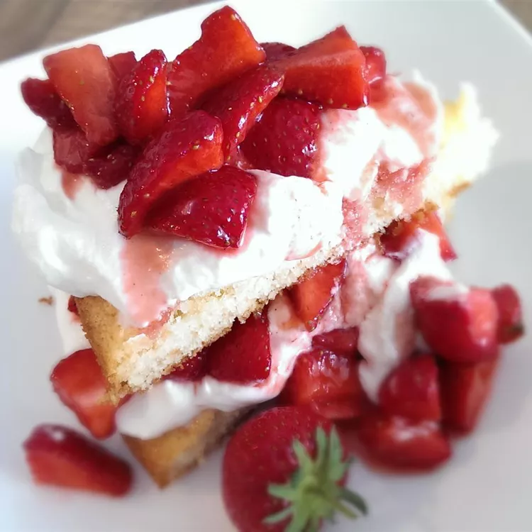

Cottage Pudding (Cake for Strawberry Shortcake)
This is a wonderful shortcake recipe my grandmother used to make for strawberry shortcake.
It is moist
and
sweet and can
be eaten by itself too.

Ingredients
- 2 cups all-purpose flour
- 2 ½ teaspoons baking powder
- ¼ teaspoon salt
- ⅓ cup vegetable shortening
- 1 cup white sugar
- 1 egg
- ½ teaspoon vanilla extract
- 1 cup milk
Directions
-
Preheat an oven to 350 degrees F (175 degrees C). Grease a 9-inch square cake pan.
Whisk the flour,
baking
powder, and
salt together in a bowl; set aside.
-
Beat the shortening and sugar with an electric mixer in a large bowl until light and fluffy.
Beat in the
egg
and vanilla
extract until smooth. Pour in the flour mixture alternately with the milk, mixing until
just
incorporated.
Pour the
batter into prepared pan.
-
Bake in the preheated oven until a toothpick inserted into the center comes out clean, about 25 minutes.
Cool in the
pans for 10 minutes before removing to cool completely on a wire rack.